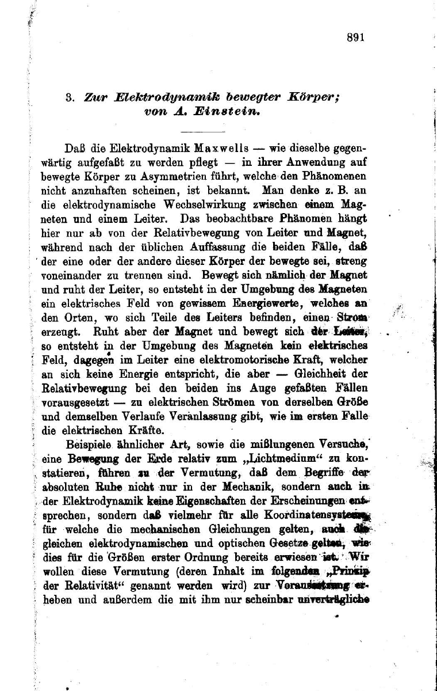
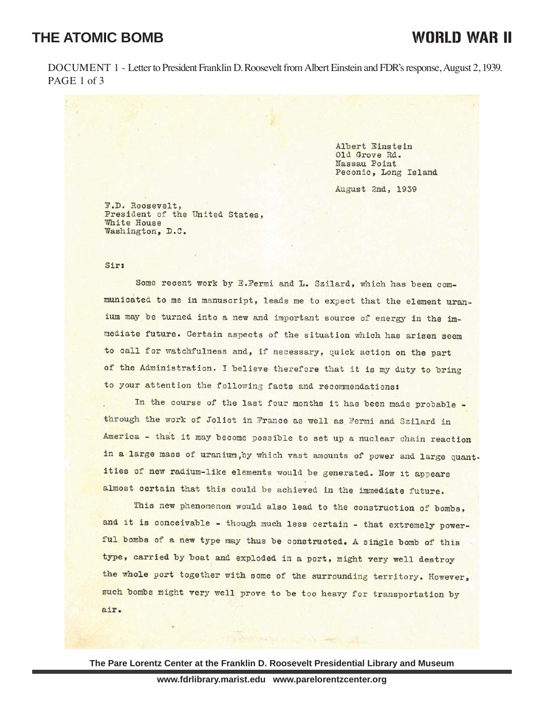
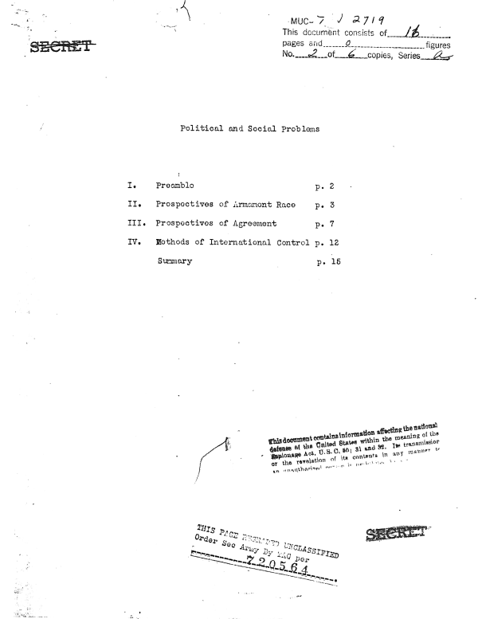
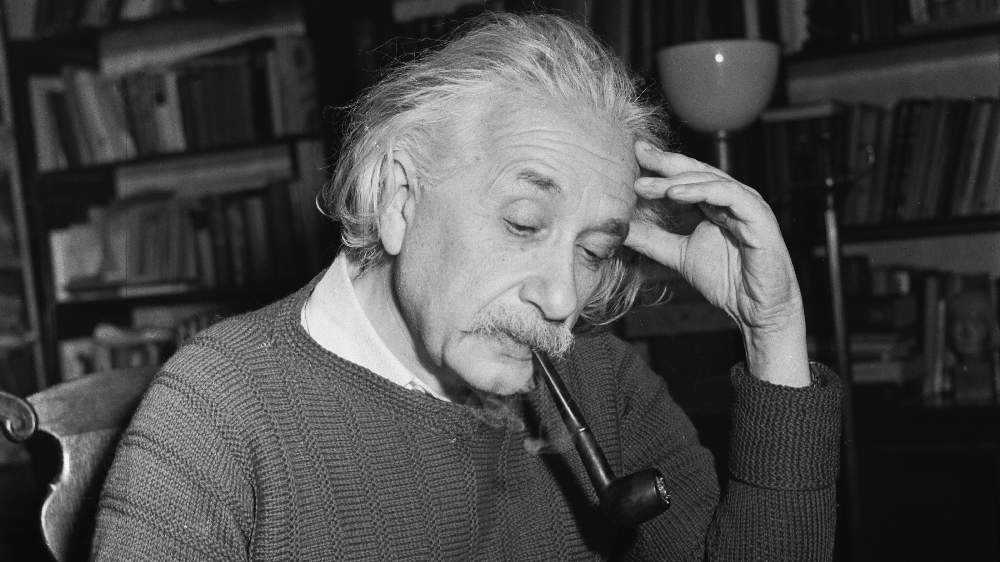
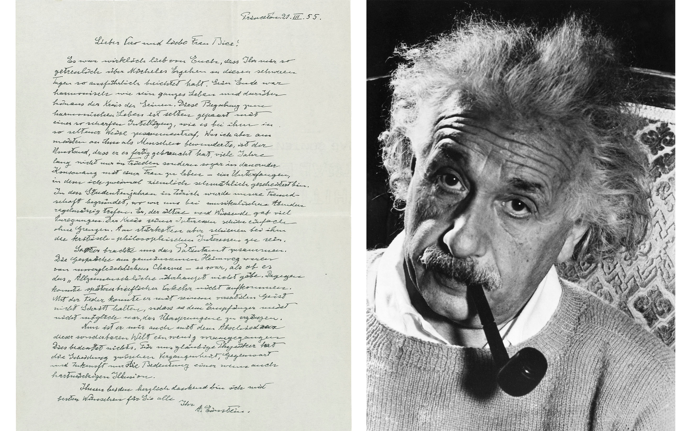

58:54 · 5 OPERE
A portrait of Albert Einstein on the anniversary of his death (April 18, 1955).
Il filo del discorso
Il ritratto documentaristico segue Einstein attraverso due forme di indipendenza: quella dello scienziato che riformula un problema e quella del cittadino che prende posizione anche quando la propria comunità lo osteggia. I filmati e le registrazioni storiche si alternano alla narrazione in inglese e agli interventi dello storico della scienza Arthur I. Miller, nominato nella fonte.
Leggi la sintesi completaRiduci la sintesi
Dall’ufficio brevetti di Berna il percorso arriva ai lavori del 1905, al rapporto fra esperienza ed esperimento mentale e alla trasformazione delle idee di spazio, tempo e gravità. La celebrità successiva alle osservazioni del 1919 viene poi messa in relazione con il pacifismo, l’internazionalismo e la difesa di chi era discriminato. Praga, Berlino e l’esilio americano mostrano il passaggio da una cultura scientifica europea alla crescita delle istituzioni statunitensi. Il dibattito con Bohr e la ricerca di una teoria unificata procedono accanto alla crisi della democrazia e alla persecuzione nazista. Nella seconda metà la domanda cambia scala: come può la ricerca conservare libertà e responsabilità quando viene sostenuta e protetta dagli apparati militari? La lettera a Roosevelt, il rapporto Franck e gli interventi contro la corsa nucleare danno forma a questa tensione, senza fare di Einstein uno degli scienziati che costruirono la bomba. Il finale torna alla dimensione personale: la vita a Princeton, l’impegno pubblico, l’amicizia con Besso e il commiato alla sua famiglia. La riflessione sul tempo conclude un racconto che unisce intuizione, istituzioni e scelte morali. La scheda attribuisce le interpretazioni alla narrazione e alle voci del documentario, mantiene distinti i documenti citati e chiarisce le semplificazioni scientifiche e cronologiche. Non presenta il materiale come una lezione originale di Dr Divago.
I libri nel discorso

Zur Elektrodynamik bewegter Körper
Identificazione probabile
Note sul riferimento
Prima pagina dell’articolo del 1905: Annalen der Physik · 1905 · prima pagina originale, p.891
Prima pagina originale dell’articolo scientifico, pagina a stampa 891, dalla scansione pubblica del Dipartimento di Fisica dell’Universidad Nacional de La Plata. Rendering PNG senza alterazioni del contenuto; non è una copertina di libro.
I lavori del 1905 e la esposizione della relatività ristretta identificano probabilmente l’articolo; il titolo non è pronunciato in questo montaggio.

Lettera a Franklin D. Roosevelt del 2 agosto 1939
Note sul riferimento
Prima pagina della lettera: Lettera del 2 agosto 1939; prima pagina riprodotta nel dossier didattico della FDR Presidential Library, p. 123 del PDF.
Riproduzione autentica della prima pagina della lettera, con intestazione e apparato del dossier didattico FDR Library. Riproduzione della pagina 123 del documento; l’immagine non mostra l’intero documento. La risposta di Roosevelt appartiene a un documento distinto e successivo. Nessuna edizione o copia visibile nel filmato è stata identificata.
Il documentario descrive esplicitamente Szilárd, Roosevelt e la lettera che avverte della possibilità della bomba.

Report of the Committee on Political and Social Problems (Rapporto Franck)
Note sul riferimento
Prima pagina del rapporto: Metallurgical Laboratory, University of Chicago, 11 giugno 1945; prima pagina del documento originale declassificato, 16 pagine.
Scansione autentica della prima pagina del rapporto, con titolo Political and Social Problems, indice e timbri di declassificazione. Fonte dichiarata: U.S. National Archives, RG 77, Harrison-Bundy File, folder 76, riprodotta da Gene Dannen. Non è una copertina commerciale. La scansione reca precedenti marcature di segretezza, cancellate dal successivo timbro di declassificazione.
Rapporto Franck delgiugno 1945 esplicito; la forma FRAC è resa nella trascrizione automatica normalizzata.

Einstein on the Atomic Bomb
Identificazione probabile
Note sul riferimento
Illustrazione dell’articolo: The Atlantic Monthly, novembre 1945; illustrazione fotografica della moderna pagina dell’archivio editoriale, credito Popperfoto / Getty.
Fotografia autentica di Einstein con la pipa, utilizzata nell’attuale pagina dell’archivio The Atlantic. È l’illustrazione editoriale moderna dell’articolo, non la copertina del fascicolo del 1945, non un facsimile dell’articolo e non un’immagine tratta dal filmato. Immagine fornita dall’editore.
Atlantic, anno 1945 e passo sugli impieghi dell’uranio identificano il testo; titolo non pronunciato.

Lettera a Vero Besso e Bice Rusconi del 21 marzo 1955
Note sul riferimento
Lettera autografa e ritratto · 1955: Composizione editoriale autentica di Christie’s: pagina autografa tedesca del 21 marzo 1955 a sinistra, ritratto fotografico di Einstein a destra. È una lettera, non una copertina editoriale; il titolo della voce è descrittivo. La raccolta curata da Pierre Speziali nel 1972 è un riferimento di catalogo, non una edizione attribuita al video.
Composizione autentica pubblicata da Christie’s: pagina autografa intera e ritratto fotografico. Non è una copertina né una raccolta epistolare; nessuna edizione del filmato è confermata.
Morte di Besso e passo finale sul tempo: documento riscontrato nel manoscritto datato21marzo 1955; titolo descrittivo della voce.